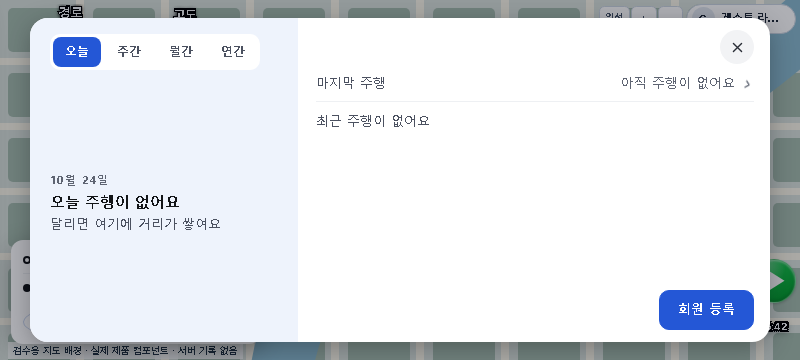
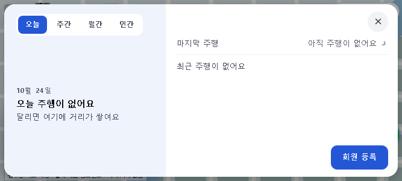
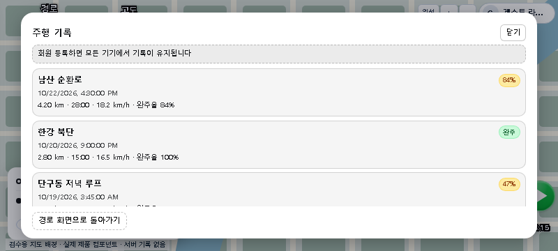
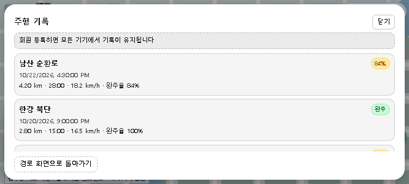
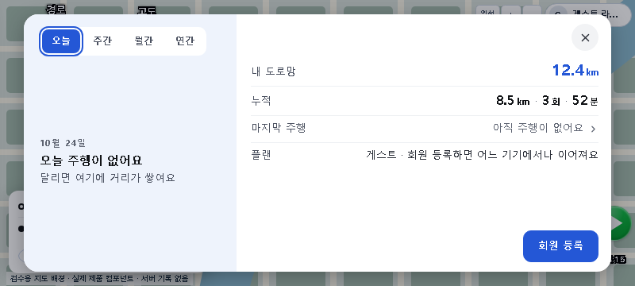

inline — 기존 방식
계정 통계와 마지막 주행을 함께 보며, 그 아래에 최근 기록을 펼칩니다.


2026-10-24 chief 결정: 현재 inline 스타일 유지. 아래 비교는 결정 당시 검토 기록입니다.
inline: 계정 패널 안에서 목록 펼침 · panel: 계정 패널 내용을 주행 기록 전용 화면으로 교체
기존 프리뷰 캡처 비교입니다. inline 캡처는 기록 0건, panel 캡처는 예시 기록 3건입니다. 동일 데이터 비교가 아니므로 기록 유무·행 수로 우열을 판단할 수 없습니다. 아래 이미지는 편집하지 않은 원본이며, 제품 코드 변경 없이 구성했습니다.
계정 통계와 마지막 주행을 함께 보며, 그 아래에 최근 기록을 펼칩니다.


통계 대신 기록 목록이 판 전체를 사용합니다. 닫으면 계정 패널로 돌아갑니다.


| 항목 | inline | panel |
|---|---|---|
| 열림·닫힘 | 「마지막 주행」으로 펼침·접기 | 「마지막 주행」으로 전용 화면 열기, 닫기·Escape로 계정 패널 복귀 |
| 계정 통계 | 목록과 함께 유지 | 기록을 보는 동안 표시되지 않음 |
| 기록 표현 | 간결한 행: 거리·시각·완주 상태·경로 설명 | 카드형: 경로명·날짜·거리·시간·평균 속도·완주율 |
| 기록에서 하는 행동 | 조건을 만족하면 지도에서 보기·이어달리기·새 경로 등 제공 | 현재 구현은 기록 열람과 복귀만 제공 |
| 기록 공급 | 계정 패널에 전달된 최근 주행 목록 | Firestore 최근 50건 조회, 오류 시 로컬 기록 사용 |
| 검토할 점 | 통계와 행동을 한 화면에서 유지 | 기록 읽을 공간 확보. 기존 기록별 행동은 현재 화면에 없음 |
최종 채택은 inline입니다. 비교용 panel 연결과 모드 플래그는 제거했습니다. 아래 캡처는 비교 당시 화면을 보존합니다.
